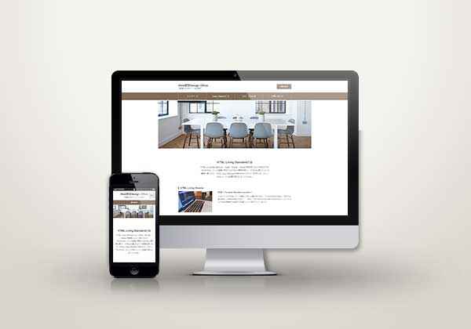

Web Site →
授業内で制作したサイトです。文章が少し固い印象を与えると思い、画像のセレクトでバランスをとってみました。また、最初はモノクロカラーのサイトでしたが、ブラウン系にしたことで温かみの感じられるサイトになったように感じます。
・bxSliderを使い画像をスライドさせる方法 ・レスポンシブ設定でメニューバーをハンバーガーボタンに変更する設定方法 ・flex-boxを使った要素の横並び設定の並べ方の変更方法 ・Call to Actionを設定する方法
閉じる
- COMMENT-
■サイトについて
授業内で制作したサイトです。文章が少し固い印象を与えると思い、画像のセレクトでバランスをとってみました。また、最初はモノクロカラーのサイトでしたが、ブラウン系にしたことで温かみの感じられるサイトになったように感じます。
■学んだこと
・bxSliderを使い画像をスライドさせる方法
・レスポンシブ設定でメニューバーをハンバーガーボタンに変更する設定方法
・flex-boxを使った要素の横並び設定の並べ方の変更方法
・Call to Actionを設定する方法